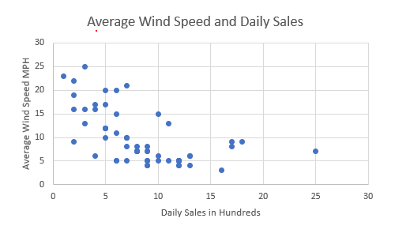
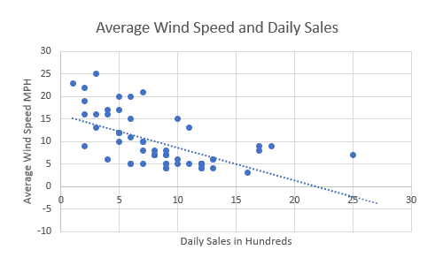
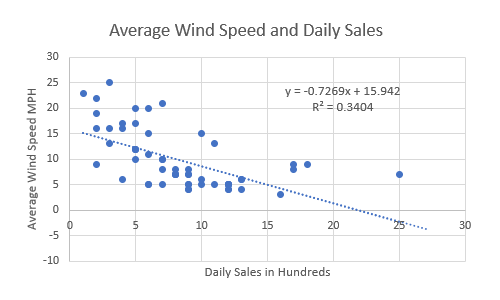

Six Sigma Process Management: Analyze Phase

Analyze Phase
The main activity in the Analyze phase is to identify the potential root cause of the problem and arrive at the actual root cause. Six sigma teams use various statistical tools in the Analyze phase to identify the root cause(s).
As noted by Mundro, Ramu & Zrymiak (2015), this phase determines how well or how poorly the process is currently performing and identifies possible root causes for variation in quality. The data analyzed can reveal the basic nature and behavior of the process, and show how capable and stable the process is over an extended period of time. The analyze phase covers two major sections. The first part covers exploratory data analysis, which includes items such as multivariate studies to differentiate variation and simple linear correlation and regression to determine the statistical significance and difference between correlation and causation. The second part offers an introduction to hypothesis testing to determine statistical significance, which includes items such as tests for means, variances, and proportions, paired-comparison hypothesis tests, and analysis of variance (ANOVA).
Some processses that are commonly analyzed include (but are not limited to):
- Billing a customer
- Developing new products
- Processing customer orders
- Upgrading software
- Managing payroll
- Hiring employees
- Budgeting
- Paying bills
- Evaluating vendors
- Improving distribution of products
- Managing inventory
Root Cause Analysis
A root cause is defined as a factor that caused a nonconformance and should be permanently eliminated through process improvement. The root cause is the core issue—the highest-level cause—that sets in motion the entire cause-and-effect reaction that ultimately leads to the problem(s). (American Society for Quality, n.d.) Root cause analysis (RCA), therefore, is a systematic process for identifying root causes of events (often seen as problems) and an approach for responding to them. The purpose is to pinpoint factors that contribute to an event or problem. This is accomplished by identifying what happened, how it happened, why it happened, and actions that can be taken to prevent future recurrance. It is important to bear in mind that in most cases there are multiple contributing factors to a problem or event, but some factors have more impact than others.
There are a variety of analysis methods that can be used for root cause analysis although in each case the goal is to identify all and multiple contributing factors to a problem or event. This is most effectively accomplished through an analysis method. Some methods used in RCA include:
Five Whys Analysis
The five whys is a very simple problem solving technique that helps get to the root causes of a probelm quickly. You identify an issue and then to get to its root cause you ask yourself "why did this occur". Then, ask yourself "why did this occur" for your answer. This continues for a series of times until a root cause or causes becomes clear. This methodology was used in the 1970s by Toyota motor company.
Pareto chart Analysis
Project Management Quality Management discusses Pareto charts, but they are also used in this phase.
Barrier Analysis
Barrier analysis involvels tracing pathways by which an intended outcome is adversely affected by a hazard or issue, including the identification of any failed or missing countermeasures that could or should have prevented the undesired effect(s). Basically, it is finding and mitigrating barriers to intended outcomes.
Causal Factor Tree Analysis
Casual factor tree analysis is an analysis technique used to record and display, in a logical, tree-structured hierarchy, all the actions and conditions that were necessary and sufficient for a given consequence to have occurred.
Fishbone Diagram (Ishikawa Diagram)
Fishbone Diagrams are used in this phase but are more commonly associated with the Six Sigma Improve phase, so are discussed in detail there.
Failure Mode and Effects Analysis (Fmea)
Failure Mode and Effects Analysis is used in this phase but are more commonly associated with the Six Sigma Improve phase, so are discussed in detail there.
Inference and Prediction
Prediction is foretelling a future event or an occurrence. Inference is a similar concept, but the theory about teh future event or occurrence is inferred by analyzing the evidence, facts, and clues. There are many times in business when assumptions about what may occur in the future occur so that decisions can be made, from what customer purchasing trends may be to the availability of supplier resources. The idea is to do all that is possible to be correct. One thing that may be helpful is to consider ranges of results instead of a single result. Another thing that may be helpful is to make iteritive predictions -- smaller but more frequent predictions upon which you can adjust business practices as the situation evolves.
Experiment
As summarized by Scott Stevens James Madison University, "An experiment is any well-defined, repeatable procedure, usually involving one or more chance events. One repetition of the procedure is called a . When a trial is conducted, it results in some outcome. (Note that, in the usual case where the experiment involves randomness, different trials can result in different outcomes.) A random variable is a measurable (numeric) quantity associated with the outcome of an experiment. An event is a statement about the outcome of the experiment that is either true or false."
Hypothesis Testing
In order to determine root causes, we may come up with hypothesis as to what is going amiss. Hypothesis testing involves making an initial assumption, collecting evidence (data) and then, based on the available evidence (data), deciding whether to reject or not reject the initial assumption. When making the initial assumption, a null hypoethesis and alternative hypothesis are created. An alternative hypothesis is the hypothesis that we are interested in proving. The null hypothesis is the complement of the alternative hypothesis. It is the hypothesis that there is no significant difference between specified samples/populations, any observed difference is instead due to sampling or experimental error. This may be best explained with an example. Let's say I hypothesize that perhaps if a person were to add one teaspoon of lemon juice to a full load of colored laundry then the laundry would come out cleaner. The null hypothesis would say that adding the lemon juice made no diffference. The alternative hypothesis would say that it did. With hypoethesis testing, we need to consider possible type I and type II errors. In type I error (also known as false positive) one rejects the null hypothesis when it is correct (in my example above the result says lemon juice makes a difference when it actually does not). In type II error (also known as false negative) one accepts the null hypothesis when it is not correct (in my example above the result says lemon juice does not make a difference when it actually does).
Below are the basic steps for hypothesis testing:
- Step 1: State the null hypothesis
- Step 2: State the alternative hypothesis.
- Step 3: Set up the test/experiment
- Step 4: Collect data
- Step 5: Calculate test statistics
- Step 6: Assess for acceptance or rejection
- Step 7: Draw conclusion
The impact of variability
In Six Sigma process management, one of the most significant goals is to minimize varation. As noted by Tom Mitchell of University of Baltimore (n.d.), "Our goal is to minimize variation within all of our critical processes. Quantitatively, this means working towards Six Sigma quality, or fewer than 3.4 defects per million “opportunities.” An opportunity is defined as a chance for non-conformance or not meeting required specifications. Culturally, this means needing to learn how to be nearly flawless in executing key processes because flawless execution is critical to both goals – customer satisfaction and increased productivity." He then wisely notes, "customers feel the variance, not the mean." It is important to note that in some cases special cause variation can build a positive impact into a process or product, but in most cases it is something we would rather eliminate or minimize.
When a process is stable and in control, it displays common cause variation (variation that is inherent to the process). A process is stable and in control when it can be predicted how the process will vary (within limits) in the future based on prior experience. If the process is unstable, the process displays special cause variation, non-random variation from external factors.
Common Cause Variation
Common cause variation is inherrent in a process; it is random variation present in stable processes.
Special Cause Variation
Speial cause variation is non-random variation from external factors; it is an unpredictable deviation resulting from a cause that is not an intrinsic part of a process.
Controlled variation
Controlled variation is characterized by a stable and consistent pattern of variation over time, and is associated with common causes. A process operating with controlled variation has an outcome that is predictable within the bounds of the control limits.
Uncontrolled Variation
Uncontrolled variation is characterized by variation that changes over time and is associated with special causes. The outcomes of this process are unpredictable; a customer may be satisfied or unsatisfied given this unpredictability.
A statistical term that is used to describe variability is variance. Variance is the measurement of the spread about the mean. It is calculated by taking the square of the differences between each data value and the mean, and then dividing by one less than the number of concentrations. It is the square of the standard deviation.
Variability Factors
The factors that cause variability in product functions are called error factors or noise.
- Factors due to environmental conditions – outer noise (ex: variations in raw materials; mental state of operators)
- Factors due to deterioration – inner noise
- Factors due to variation among products – inner noise (humidity, dust, vibrations)
To study each factor independently, the plan consists of two orthogonal arrays – the inner array and the outer array. The inner array consists of control factors, and the outer array consists of noise and signal factors.
statistics and Data Analysis distributions
Statistics is a branch of mathematics dealing with the collection, analysis, interpretation, and presentation of masses of numerical data. There are five basic steps to statistics and the subsequent data analysis: 1. Collect data; 2. Organize the data; 3. Analyze the data; 4. Interpret the data; and 5. Present the data. As data analysis is performed, the data will be distributed in some type of pattern. A few common types of distributions are normal and binomial.
Normal distribution
With a normal distribution the data is distributed around a central value with no bias left or right. This is commonly known as a bell curve and looks like this:

Binomial distribution
A binomial distribution can be thought of as simply the probability of one of two outcomes (success/failure, yes/no, etc) in an experiment or survey that is repeated multiple times. The prefix “bi” means two, or twice.

In many cases, a focus of statistics is understanding how far results may deviate from the mean. This is known as standard deviation. Standard Deviation (Std Dev) is the easurement of the spread about the mean. It is the square root of the differences between each data value and the mean, divided by one less than the number of concentrations. It is the square root of the variance.
probability Distributions and Central Limit Theorem
A probability distribution ("sampling distribution") is a statistical function that describes all the possible values and likelihoods that a random variable can take within a given range.The range is the difference between the lowest and highest values in a distribution. It is a commonly used measure of variability.
A key part of statistics is the central limit theorum, which states that the distribution of sample means approximates a normal distribution as the sample size gets larger. Based on this theorum, the means of a random sample of size, n, from a population with mean, µ, and variance, σ2, distribute normally with mean, µ, and variance, σ2/ n as the sample size increases. It states that the sampling distribution of means is normally distributed even for non-normal raw data distributions (such as data that is skewed one direction or the other) with larger samples.

Confidence Intervals
A confidence interval is a range of values that describes the uncertainty surrounding an estimate. A confidence interval is indicated by its endpoints. It is actually an estimate in itself. Confidence limits are the numbers at the upper and lower end of a confidence interval. The confidence limits of a measurement are the limits between which the measurement error is with a probability P. Most people use 90%, 95%, or 99% confidence limits, although you could use other values. The confidence level (typically 90 to 99%) reports a range of concentrations within which a particular parameter would likely occur if samples were taken repeatedly from the sample distribution.
Correlation versus Causation
Correlation is a term in statistics that refers to the degree of association between two random variables (or tests for a relationship between two variables). If two or more variables are correlated, their directional movements are related. If two variables are positively correlated, it means that as one goes up or down, so does the other. Alternatively, if two variables are negatively correlated, one goes up while the other goes down. No correlation is when two variables are completely unrelated and a change in A leads to no changes in B, or vice versa.
A correlation’s strength can be quantified by calculating the correlation coefficient, sometimes represented by r. The correlation coefficient falls between negative one and positive one.
- r = -1 indicates a perfect negative correlation.
- r = 1 indicates a perfect positive correlation.
- r = 0 indicates no correlation.
Causation (also known as causality) means that one variable caused the other to occur. Proving
a causal relationship between variables requires a true experiment with a control group (which doesn’t receive
the independent variable) and an experimental group (which receives the independent variable). It means A and B
have a cause-and-effect relationship with one another where A causes B. However, seeing two variables moving
together does not necessarily mean we know whether one variable causes the other to occur. A strong
correlation could indicate causality but there could easily be other explanations. For example, it could be due
to random chance or another variable that makes the relationship seem stronger than it is. To see some examples,
visit the spurious
correlations website. To test your data for causation one would use design of experiments.
design of experiments
Design of experiments is used to test data for causation and are built for efficiency. It is a series of tests in which purposeful changes are made to the input variables of a system or process and the effects on response variables are measured. This might include randomized and experimental study, quasi-experimental study, correlational study, or singlestudy. In experimental design, there is a control group and an experimental group, both with identical conditions but with one independent variable being tested. Quasi-experimental studies typically require more advanced statistical procedures to get the necessary insight and occur when you can’t randomize the process of selecting users to take the study. A correlational study is when you try to determine whether two variables are correlated or not. Single study (also known as single subject research or single case experiments) has a participant that serves as both the control and treatment grouip. This research design is useful when the researcher is attempting to change the behavior of an individual or a small group of individuals and wishes to document that change.
Tellford (2009) identified the fundamental principles of design of experiments as randomization, replication, blocking, orthogonality, and factorial experimentation. Each are described below.
Randomization. A method that protects against an unknown bias distorting the results of the experiment by testing the sequence of baseline and other measures in random order so unknown bias can average out.
Replication. A method that increases the sample size and is a method for increasing the precision of the experiment. A replicate is a complete repetition of the same experimental conditions, beginning with the initial setup.
Blocking. A method for increasing precision by removing the effect of known nuisance factors. In a blocked design, both the baseline and new procedures are applied to samples of material from one batch, then to samples from another batch, and so on.
Orthogonality, The factors in an orthogonal experiment design are varied independently of each other. The main results of data collected using this design can often
be summarized by taking differences of averages and can be shown graphically by using simple plots of suitably chosen sets of averages.Factorial experimentation. A method in which the effects due to each factor and to combinations of factors are estimated. Factorial designs investigate the effects of many different factors by varying them simultaneously instead of changing only one factor at a time. Factorial designs allow estimation of the sensitivity to each factor and also to the combined effect of two or more factors.
A full introduction can be found at the Johns Hopkins University Applied Physics Laboratory article A Brief Introduction to Design of Experiments by Jacqueline K. Telford
Regression analysis
Regression analysis is a method of identifying which variables have impact on a topic of interest by mathematically sorting out variables that have an impact from many possible variables. Let's say you are a company that sells corn dogs from a food truck. You know there are many factors that can impact your sales. In simply looking at weather you know that if it is too cold or hot or rainy or snowy or windy it will have an impact. You also know that holidays and school schedules also have a sales impact; particularly on what individuals elect to purchase. It also seems that a large impact is where your truck is located for the day. You feel this may perhaps be the most important factor influencing sales. Regression analysis is a mathematical way of determining which variables do indeed have an impact and expresses which factors matter the most. It also addresses how different factors interact with one another and, importantly, tells us the level of certainty.
To perform a regression analysis, gather data on the variables in question. In our case lets consider how windy it has been in the past year (independent variable) and compare it to the daily sales numbers (dependent variable).
Next we plot all of our information in a scatter diagram with the y-axis being the dependent variable and the x-axis being the independent variable. Ours might look something like this:

It does seem to show that lower wind speeds tend toward higher daily sales, but by how much? To find out, next we add a regression line (linear trendline) that shows roughly the middle of the data points:

This shows the line that best fits the data and demonstrates that there is indeed a negative correlation between the average wind speed and the daley sales in hundreds of dollars.
If you use a statistics program then it also outputs a formula that explains the slope of the line.

Our information shows
y = -0.7269x + 15.942
R² = 0.3404
What this formula is telling us is that if there is no x then y = 15.942. So, historically, when there was no wind at all we vmade an average of 15.942 hundred dollars ($1,594.20) in sales and you can expect to do the same going forward assuming other variables stay the same. And in the past, for every additional mile per hour of wind, we made an average of .7269 hundred dollars ($72.69) in sales.
The R-Squared (R² or the coefficient of determination) is a statistical measure in a regression model that determines the proportion of variance in the dependent variable that can be explained by the independent variable. In other words, r-squared shows how well the data fit the regression model (the goodness of fit). R-squared values range from 0 to 1 (and are commonly stated as percentages from 0% to 100%). An R-squared of 100% means that all movements of a dependent variable is completely explained. In our case only 34.04% of the movement is explained. This means it basically had only a small effect.
A good review article can be found in a Harvard Busines Review written by Amy Gallow (2015) called A Refresher on
Regression Analysis.
References
American Society for Quality. (n.d.) What is Root Cause Analysis. Retrieved July 14, 2021 from https://asq.org/quality-resources/root-cause-analysis
Munro, R., Ramu, G., & Zrymiak, D. (2015). The Certified Six Sigma Green Belt Handbook. Second edition.
Stevens, S. (n.d.). Probability and Expected Value. Retrieved June 28, 2022 from https://www.fulsheartexas.gov/docs/CC%20Minutes/Probability_and_expected_value.doc
Tellford, J. K. (2007). A Brief Introduction to Design of Experiments. Johns Hopkins Technical Digest. 27(3). Retrieved June 29, 2022 from https://www.jhuapl.edu/Content/techdigest/pdf/V27-N03/27-03-Telford.pdf